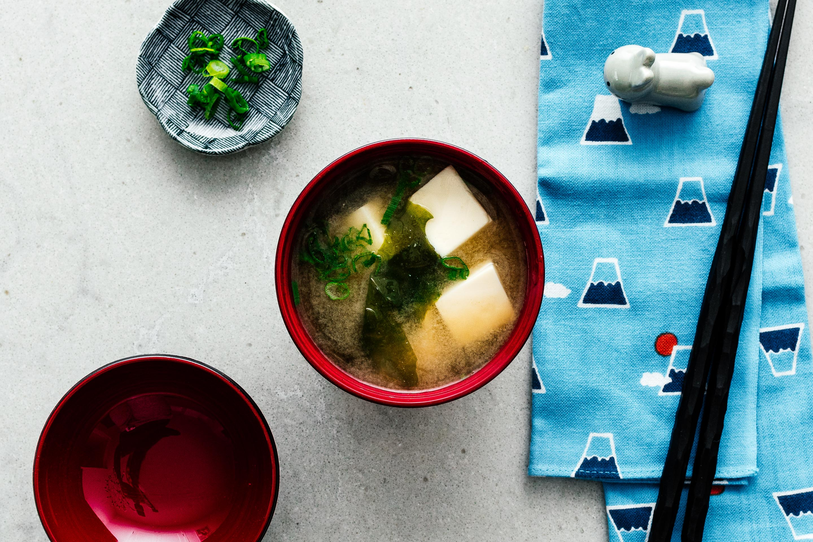

Miso Soup
Bite sized, super juicy, intensely flavorful, with a crispy, cracker-y crunch.
INGREDIENTS
- 2 cups dashi
- 2-3 tablespoons miso
- wakame seaweed, as desired
- 1/2 package soft tofu
- sliced green onions to finish
INSTRUCTIONS
Note: You can use red miso, white miso, yellow miso, or a mix.
- Make 2 cups of dashi according to the package instructions. Bring to a simmer over medium high heat.
- Remove the pot from the heat. Get a bowl and ladle out a small amount of dashi into it and and stir the
miso into the bowl of hot dashi, making a miso slurry. When it’s smooth, add the miso slurry back into
the pot.
- Add seaweed, tofu, and green onions and gently heat over very low heat being sure not to bring it up to
a simmer or boil – you don’t want the miso to be too hot because you’ll kill all of the amazing
probiotics. Enjoy immediately!